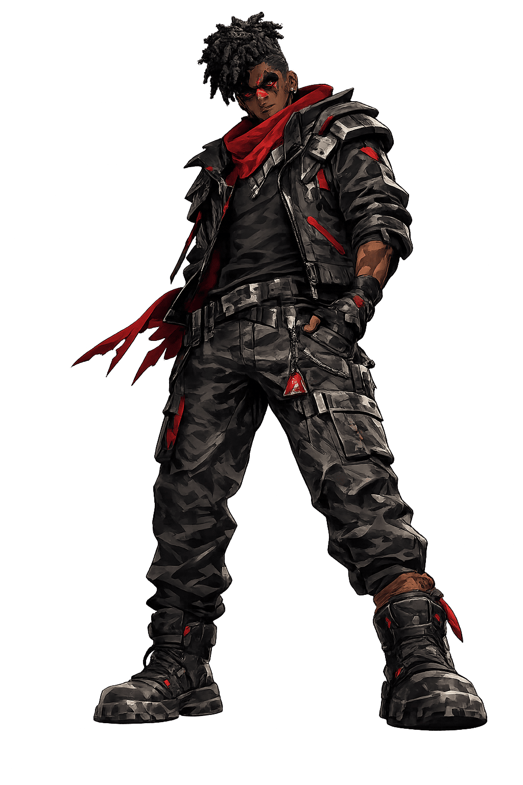

| STABILITÉ PSY | 32% [CRITIQUE] |
| INTÉGRITÉ MÉMOIRE | 14% |
| FRONTIÈRE | CASSÉE |
> "Je ne dors plus. Je ne fais que télécharger les cauchemars des autres."
Darius est le sujet central du PROJECT M13. Ancien ingénieur dont l'identité a été partiellement effacée, il sert désormais de réceptacle aux souvenirs que le système ne peut pas supprimer. Son corps est une interface vivante, hanté par une silhouette floue — une trace résiduelle d'un passé que le projet tente de cacher.
Il ne distingue plus la réalité physique des flux de données. Pour lui, chaque objet du monde réel est lié à un fragment de code ou à une mémoire perdue.
Darius peut "voir" les souvenirs supprimés dans une pièce. En touchant un objet, il déclenche un glitch temporel qui lui permet de revivre une scène effacée, au prix d'une immense douleur physique.
Lors de ses crises, Darius projette ses cauchemars dans la réalité. Les témoins rapportent des murs qui se transforment en lignes de code et des sons distordus provenant d'époques différentes.
Le sujet présente des signes de rejet mémoriel. La silhouette floue qui le poursuit n'est pas une entité malveillante, mais la conséquence physique des données qu'il a tenté d'oublier. On ne peut pas supprimer sans créer.
INT. APPARTEMENT DE DARIUS - NUIT
La pièce est plongée dans le noir, seulement éclairée par le grésillement d'une vieille télévision. DARIUS (26 ans) est assis par terre, le regard vide. Son bras droit tremble, parcouru de lignes lumineuses rouges sous la peau.
Derrière lui, dans le reflet de l'écran, une SILHOUETTE FLOUE se tient debout. Elle ne bouge pas. Elle attend.
DARIUS
(Sa voix se dédouble)
"Arrête de me montrer ça. Ce n'est pas à moi. Je n'ai jamais été dans ce laboratoire."
La silhouette s'approche. Le son de la pièce se distord, comme un fichier audio corrompu.
VOIX DE CLARA (Radio)
"Darius ! Réponds-moi ! Ton rythme cardiaque sature. Qu'est-ce que tu vois ?"
DARIUS
"Je vois... une petite fille. Elle pleure des pixels. Clara, je crois que je suis en train de me souvenir de ta mort."
Soudain, la télévision explose en une gerbe de lumière blanche. Darius hurle alors que les murs de l'appartement commencent à se dissoudre dans le néant technologique.
CUT TO BLACK.